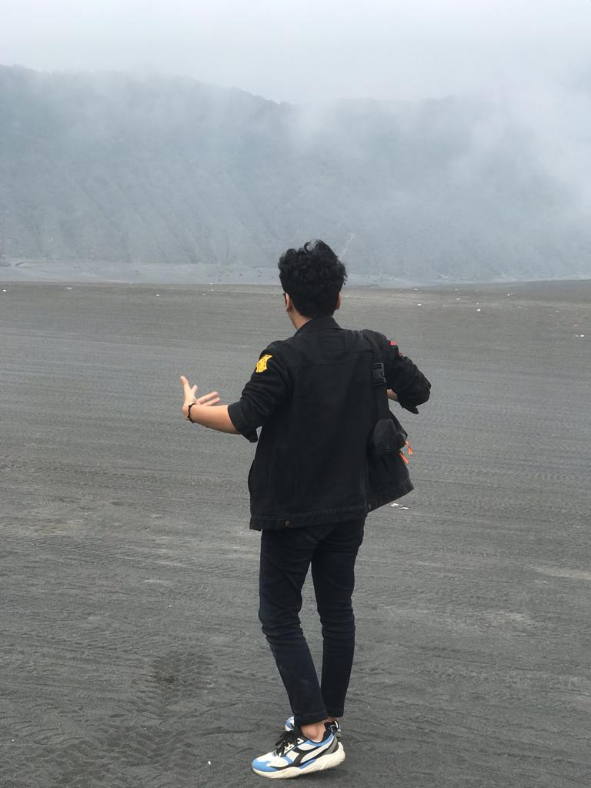

Tentang Saya
Kenali lebih dekat siapa saya dan apa yang saya lakukan 🌱

Hai, saya Petra
Saya adalah seorang pengembang web yang sedang belajar dan mengembangkan keterampilan di bidang pemrograman, khususnya pada pengembangan aplikasi web dan mobile. Saya adalah seorang mahasiswa bidang informatika tahun ke tiga. Disini saya sedang mempelajari framework CSS populer yaitu Bootstrap dan ini adalah blog sederhana yang saya buat untuk berbagi pengetahuan dan pengalaman saya.
Saya tertarik dengan teknologi modern, framework JavaScript, dan juga dunia DevOps. Selain coding, saya juga aktif mengikuti kegiatan organisasi untuk mengasah soft skill.